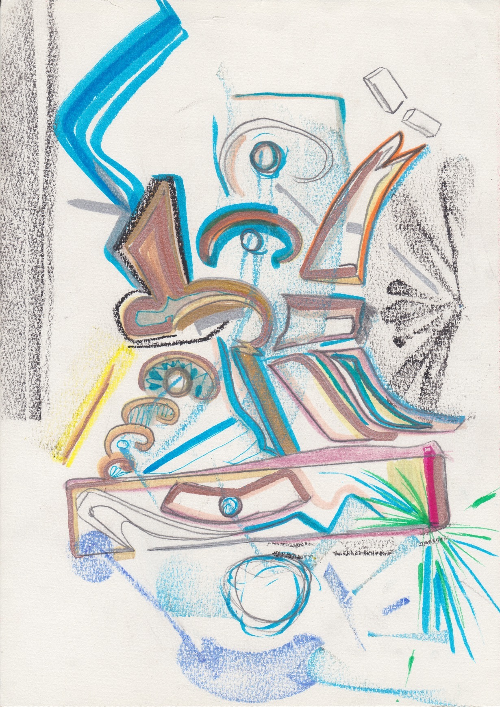

Architecture des Songes
Date de création : 27/01/2023
Cette création ressemble à un rêve qui se construit en direct. Les traits s’empilent, se croisent, inventent un monde impossible mais pourtant familier. Une architecture née de l’inconscient, là où la logique laisse place au mystère.